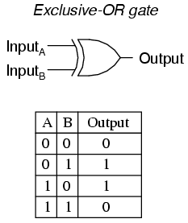
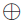
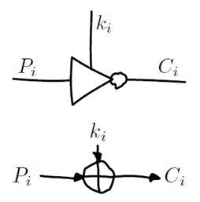
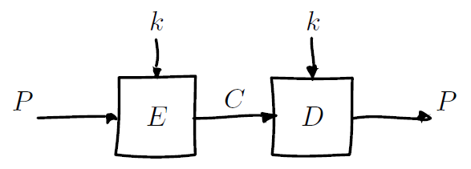

Cryptography 101
-
Exclusive OR

XOR: Boolean binary operator that is true when either the first input or the second input, but not both, are true. Generally represented by a cross in a circle: 
XOR: programmable inverter; one input bit decides whether to invert the other input bit. Pi = plain text bit
ki = key bit
Ci = cipher text bit (result of XOR operation) -
XOR Properties
1. a(bc) = (ab)c
2. ab = ba
3. Any bit XOR itself is zero: aa = 0
4. Any bit XOR zero is that bit again: a0 = a
This also implies: aba
= aab
= 0b
= b
-
Bitwise XOR
A "bitwise XOR" operator performs XOR on respective bits of two values. Python, for example, provides the ^ operator that performs bitwise XOR on integers. e.g.
7387 = 0b1001001 0b1010111
= 1 0 0 1 0 0 1
1 0 1 0 1 1 1
= 0 0 1 1 1 1 0
= 30 -
Symmetric-Key Encryption
Symmetric Meaning using the same key.
There are two types of ciphers: * Block Cipher: process plaintext of fixed length C=E(K, M) C and M are both binary with length n K is binary with length r n is called block length of the cipher Typical block lengths n are 64 (DES) or 128 (AES) Typical key lengths r are 56 (DES) or 128, 192, 256 (AES) There are 2 ** n plaintext blocks and 2 ** n cipher text blocks of length n. The Function E maps {0, 1}n bijectively to {0, 1}n To choose a key k, means to select a permutation Ek of {0, 1}n Max security = choose randomly for all n bits. But 2 ** n key length is too long, too much for storage. So get a shorter key. * Stream Cipher: process plaintext of streams C = E(K, M) / M = D(K, C) c1 = E(k1, m1), c2 = E(k2, m2), c3 ... m1 = D(k1, c1), m2 = D(k2, c2), m3 ... ci / mi / ki are binary bits or bytes -
One-Time Pads
A Pad is a sequence of key bits generated purely random, and never used again. The attackers learn nothing about the plaintext when they see a ciphertext. Let's say Eve sees a ciphertext bit Ci is 1. She has no idea if the plaintext or key bit is 0 or 1.
-
Attacks on One-Time Pads
OTP only holds if: it contains truly random data; it can only be used once.
Reusing OTP reveals the plaintext to a certain level. Because:
C1 = P1 key
C2 = P2 key
So, C1 C2 = P1 P2 key key
= P1 P2 0 = P1 P2Illustration of (f) = P1 P2:

S
-
Crib Dragging
Let's take the following message and key: message = "Hello World" key = "supersecret" If we convert both the message and key to hex strings, we get the following: message = "48656c6c6f20576f726c64" key = "7375706572736563726574" If we do a simple XOR of the two hex strings we get the following cipher-text: cipher-text = "3b101c091d53320c000910" what happens when you have two messages encrypted with the same key. Take the following two messages and key: message1 = "Hello World" message2 = "the program" key = "supersecret" If we convert each message and the key to hex strings, and then encrypt each message using a simple XOR with the key,
we'll get the following cipher-texts: cipher-text1: "3b101c091d53320c000910" cipher-text2: "071d154502010a04000419" Let's say that all we have is the two cipher-texts and the knowledge that they were encrypted with a supposed OTP; however,
they were both encrypted with the same key. To attack this encryption and uncover the plain-text, follow the steps below. Guess a word that might appear in one of the messages Encode the word from step 1 to a hex string XOR the two cipher-text messages XOR the hex string from step 2 at each position of the XOR of the two cipher-texts (from step 3) When the result from step 4 is readable text, we guess the English word and expand our crib search. If the result is not readable text, we try an XOR of the crib word at the next position. Step 1 seems difficult (guessing a word that might appear in one of the messages), but when you think about it, the word "the"
is the most commonly used English word. So, we'll start with assuming "the" is in one of the messages. After encoding "the"
as a hex string, we'll get "746865". That takes care of steps 1 and 2. If we XOR the two cipher-texts, we'll get the following result: cipher-text1 XOR cipher-text2 = "3c0d094c1f523808000d09" The next step is to XOR our crib word "746865" at each position of the XOR of the cipher-texts. What we'll do is slide "746865"
along each position of "3c0d094c1f523808000d09" and analyze the result. After the first XOR, we get the following result: 3c0d094c1f523808000d09 XOR 746865 ---------------------------------- 48656c When we convert the hex string "48656c" to ASCII, we get the following text, "Hel". This takes us to step 5 from above. Because
this looks like readable text, we can assume that the word "the" is in the first position of one message. If we didn't get
readable text, we would slide "746865 (the)" one position to the right and try again (and keep repeating until the end of 3c0d094c1f523808000d09). Note that we don't know which message contains the word "the". It could be in either message1 or message2. Next, we need to guess
what the word "Hel" is when fully expanded. It could be "Help", "Hello", etc. If we guess "Hello", we can convert "Hello"
to a hex string, we get "". We then XOR it with the XOR of the two cipher-texts (just like we did with "the"). Here's the result: 3c0d094c1f523808000d09 XOR 48656c6c6f ---------------------------------- 7468652070 "7468652070" when converted to ASCII, is "the p". We then repeat the process, guessing what "the p" might be when expanded and then
XOR that result with the XOR of the cipher-texts. Granted, guessing what "the p" might expand to is not super easy, but you get the idea.
If we were to guess "the program", convert it to a hex string, and XOR it with the XOR of the cipher-texts, we'll get "Hello World".Python Code:
>>> message="Hello World" >>> key ="supersecret" >>> b_message = message.encode('ascii') >>> b_key = key.encode('ascii') >>> c = [m_byte^k_byte for (m_byte, k_byte) in zip(b_message, b_key)] >>> c [59, 16, 28, 9, 29, 83, 50, 12, 0, 9, 16] >>> bytes(c) b';\x10\x1c\t\x1dS2\x0c\x00\t\x10' >>> message2 = "the program" >>> b_message2 = message2.encode('ascii') >>> c2 = [m2_byte^k_byte for (m2_byte, k_byte) in zip(b_message2, b_key)] >>> c2 [7, 29, 21, 69, 2, 1, 10, 4, 0, 4, 25] >>> the = "the" >>> the_crab = the.encode("ascii") >>> the_crab b'the' >>> the_crab[0] 116 >>> the_crab[1] 104 >>> bytes(c2) b'\x07\x1d\x15E\x02\x01\n\x04\x00\x04\x19' >>> c12 = [c1_bit^c2_bit for (c1_bit, c2_bit) in zip(c, c2)] >>> c12 [60, 13, 9, 76, 31, 82, 56, 8, 0, 13, 9] >>> first_guess = [crab_bit^c_bit for (crab_bit, c_bit) in zip(the_crab, c12[0:3])] >>> first_guess [72, 101, 108] >>> first_guess_chr = [chr(guess) for guess in first_guess] >>> first_guess_chr ['H', 'e', 'l']S
-
Other problems of OTP
* The key should be at least as large as the plaintext * You need to transfer the keys securely to all recipients. * Generating large sized keys purely random is time consuming. We need keys with manageable sizes and transfer them over the Internet.
C
-
Block Ciphers
block cipher = algorithm that allows us to encrypt blocks of fixed length. It provides function E to turn plaintext block P into ciphertext blocks C, using a secret key k: C = E(k, P) block size = Length(C) = Length(P) k is in [keys], which is called keyspace Later, the ciphertext block can be decrypted using function D: P = D(k, C)  block cipher = symmetric-key encryption OR secret-key encryption scheme Meaning: same key is used for both Encryption and Decryption. block cipher is also keyed permutation. {Permutations of P blocks} <=== maps to === by key ===> {Permutations of C blocks} -
DES
DES = Data Encryption Standard DES = FIPS46, 1977 DES = 56 bits key length, 64 bits plaintext length, 16 rounds (16 major steps) In each round, a 48-bit round key ki is used. The 16 round keys k1, k2, ... k16 are computed from the 56 bit key k. Basic building block of DES: f = map {0, 1}48 * {0, 1}32 -> {0, 1}32 f(k', x) = P(S(E(x) xor k')) Eight substitution boxes.B
-
AES
AES = Advanced Encryption Standard AES = Rijndael, Belgian cryptographers Vincent Rijmen + Joan Daemen Rijndael = A family of block ciphers, with block sizes and key sizes that could be any multiple of 32 bits between 128 bits and 256 bits. When Rijndael becomes AES (FIPS-197), block size = 128 bites, key size = 128 / 192 / 256 bits. FIPS = Federal Information Processing Standards A closer look at AES: AES
B